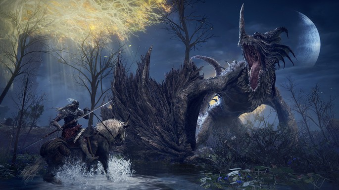
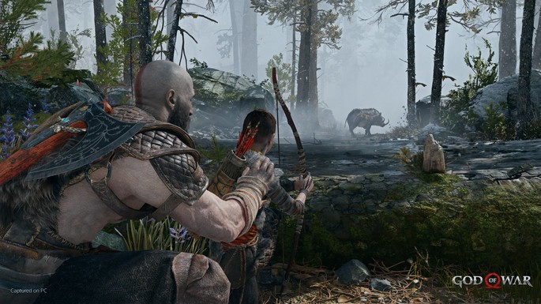
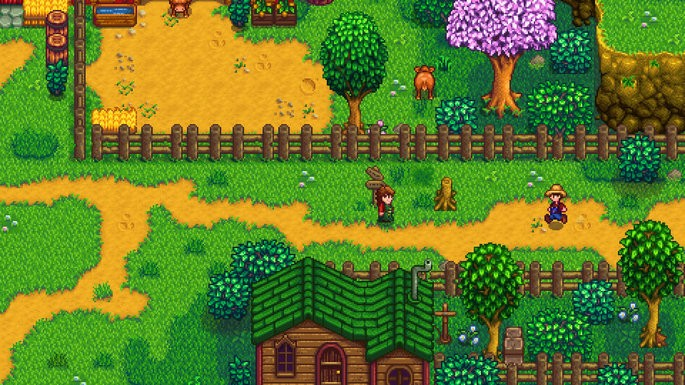

Um jogo eletrônico para um jogador, também conhecido pelo anglicismo single player, é um jogo eletrônico que possibilita a participação de apenas um jogador por partida, geralmente de um jogador humano, e se houver mais participantes, são controlados pelo computador. Essa determinação, entretanto, não inclui jogos on-line ou em LAN, pois outros jogadores também estão jogando o mesmo jogo ao mesmo tempo, ainda que não seja no mesmo computador ou console de videogame.
Elden Ring é o mais novo jogo de RPG de ação e fantasia. Onde, você irá criar seu próprio personagem e conhecer este fantástico cenário, que teve a participação de George R.R. Martin na criação da mitologia do universo de Elden. Então se prepare para grandes aventures, muitos monstros e sangue pelo caminho!
Nesta nova aventura de God of War, você acompanha Kratos e seu filho Atreus, vivendo num reino de Deuses e monstros Nórdicos. É neste novo mundo duro e impiedoso, em que ele tenta ser o mentor de seu filho, enquanto tem que lutar para sobreviver e ensinar a Atreus a fazer o mesmo. God of War mergulha na mitologia nórdica, trazendo várias criaturas fantásticas para você dizimar com Kratos e seu filho.
Stardew Valley é um RPG/simulador de agricultura. Com gráficos minimalistas estilo Zelda do Nintendinho. O jogo oferece uma experiência muito cativante que o torna um dos jogos indies mais aclamados de todos os tempos. Além de cuidar de uma fazenda herdada do avô, grande parte do gameplay gira em torno de desenvolver seus relacionamentos com os NPCs vizinhos, seja fazendo amizades e conhecendo suas histórias ou mesmo arranjando pares românticos.
